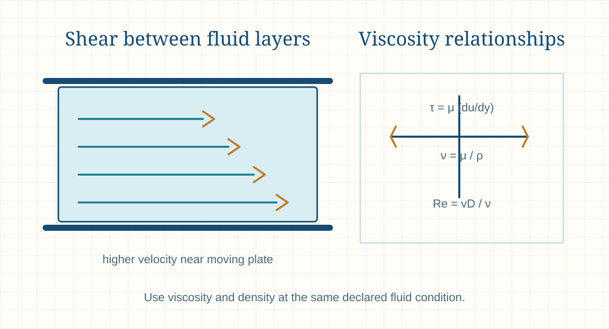

Engineering principle
Dynamic and Kinematic Viscosity
Dynamic viscosity describes a fluid’s resistance to shear, while kinematic viscosity relates that resistance to density. Both properties affect pressure loss, flow regime, pumping and heat-transfer calculations.

- Content type
- Engineering principle
- Level
- Engineering › Fluid Mechanics, Piping, Pumps, Fans and Ducts › Fluid Properties › Viscosity › Dynamic and Kinematic Viscosity
- Audience
- Student · Design engineer · Project engineer · Plant engineer
- Last reviewed
- 30 August 2026
What Is Dynamic and Kinematic Viscosity?
Viscosity describes a fluid’s resistance to deformation and relative motion. In a liquid or gas, adjacent layers moving at different velocities exchange momentum; the property that links shear stress to the velocity gradient is dynamic viscosity, represented by μ (mu).
Kinematic viscosity, represented by ν (nu), is dynamic viscosity divided by density. It is especially useful in Reynolds-number and momentum-diffusion work because it combines resistance to shear with the fluid’s mass per unit volume.
Neither viscosity value is a material constant without a condition. Temperature has a strong effect on liquids; pressure, temperature and composition influence gases and process fluids. A calculation must therefore identify the fluid, grade or concentration, temperature, pressure where relevant, and whether the required value is dynamic or kinematic viscosity.
Why Is Dynamic and Kinematic Viscosity Important in Engineering?
Viscosity affects pressure loss, pumpability, mixing, heat-transfer coefficients, settling, coating, lubrication, pipe sizing and the transition between laminar and turbulent flow. A fluid that is only modestly more viscous can require a different pump, pipe diameter, motor duty or start-up procedure.
For bulk and process systems, viscosity may vary across the operating range rather than at a single nominal temperature. Design and operations teams therefore need the worst credible fluid condition, a traceable measurement basis, and a clear distinction between Newtonian behaviour and fluids whose apparent viscosity changes with shear rate.
Key Terms and Definitions
- Dynamic viscosity, μ
- Shear stress divided by velocity gradient; SI unit Pa·s.
- Kinematic viscosity, ν
- Dynamic viscosity divided by density; SI unit m²/s.
- Shear stress, τ
- Tangential force per area acting between fluid layers; Pa.
- Velocity gradient, du/dy
- Change of fluid velocity through the layer thickness; s⁻¹.
- Newtonian fluid
- A fluid whose shear stress is proportional to velocity gradient at a stated condition.
- Apparent viscosity
- A shear-rate-dependent value used for non-Newtonian fluids.
- Reynolds number
- Dimensionless ratio used to interpret inertia and viscous effects in a flow.
- Viscosity index
- A petroleum-product descriptor of how viscosity changes with temperature; it is not a viscosity unit.
Fundamental Principle
For a Newtonian fluid, shear stress is proportional to the velocity gradient: a larger viscosity requires more shear stress to create the same relative layer motion. This is why a viscous oil resists flow more strongly than a low-viscosity liquid in similar equipment.
Kinematic viscosity ν = μ/ρ shows that the same dynamic viscosity can lead to a different momentum-diffusion behaviour when density differs. In pipe flow, this relation appears in Reynolds number, where viscosity influences the balance between inertial and viscous forces.
Engineering interpretation and design basis
Viscosity can dominate system behaviour long before it is obvious from a fluid’s appearance. In laminar pipe flow, pressure loss is strongly tied to viscosity and flow rate; in turbulent flow, viscosity still affects the Reynolds number and friction factor. A liquid that becomes more viscous during cold start-up can therefore move from an acceptable operating condition to a pump, motor or pressure-drop problem.
Non-Newtonian fluids need extra care. Their apparent viscosity may vary with shear rate, time under shear, temperature, solids concentration or previous mixing history. A single number from a data sheet may represent a particular test method rather than the shear conditions inside a pump, pipe, mixer or coating line. The calculation basis must identify the relevant rheological regime.
Formulae, Symbols and Units
Newton’s law of viscosity
τ = μ (du/dy)
For Newtonian flow, τ is shear stress in Pa, μ is dynamic viscosity in Pa·s, and du/dy is the velocity gradient in s⁻¹.
Kinematic viscosity
ν = μ / ρ
Use μ in Pa·s and density ρ in kg/m³ to obtain ν in m²/s.
Reynolds number
Re = ρvD / μ = vD / ν
This relation is a screening tool for internal flow. The applicable transition range depends on geometry and disturbances.
Laminar pipe-flow screening
Δp ∝ μQ
For fully developed laminar flow in a fixed circular pipe, pressure drop changes approximately in proportion to viscosity and flow rate.
Interpretation before use
The equations describe a property relationship, not the full process. A pressure-loss calculation still needs pipe geometry, wall condition, flow distribution and a friction-factor method. A mixer or pump calculation additionally needs equipment-specific performance data.
Use a viscosity-temperature curve, a rheological test or supplier data when viscosity changes over the normal operating range, when the material contains solids, or when the outcome affects motor sizing, NPSH, heat tracing or safety relief design.
Using the result in engineering work
Viscosity values are frequently reported in mPa·s, cP, mm²/s or cSt. These units are related but not interchangeable without density. One centipoise equals one mPa·s for dynamic viscosity, while one centistoke equals one mm²/s for kinematic viscosity. Convert the data deliberately before inserting it into a Reynolds-number, pressure-loss or lubrication relation.
Temperature-viscosity data should be treated as a curve or a declared table, not as an assumed straight line. For oils, resins, syrups, slurries and polymer solutions, a modest temperature difference can change the pumping and heat-transfer behaviour materially. Use the controlling cold, normal and hot operating conditions where they affect equipment selection.
Assumptions and Validity Range
- The stated fluid is homogeneous or its relevant mixture composition is known.
- The selected value matches the expected temperature and pressure.
- Newtonian relations are used only when the fluid behaves approximately as Newtonian over the relevant shear-rate range.
- Density used for kinematic viscosity matches the same fluid condition as dynamic viscosity.
- Pipe, pump and heat-transfer calculations include geometry and operating effects in addition to viscosity.
- The result is preliminary unless validated by approved property data or testing.
Factors Affecting the Result
Temperature
Liquid viscosity usually falls as temperature rises; oils, syrups and polymer solutions can change significantly across a normal operating range.
Pressure
High pressure can affect some liquids and gases; use validated data when it is material.
Composition
Concentration, dissolved solids, impurities and blending can change viscosity substantially.
Shear rate
Non-Newtonian fluids can thin or thicken as shear rate changes.
Time and history
Thixotropic materials may change apparent viscosity after mixing, storage or sustained shear.
Measurement method
Rotational, capillary and process measurements can represent different regimes and should not be compared without context.

Step-by-Step Engineering Method
- Identify the fluid and duty. Record product grade, composition, temperature range, pressure and whether the material is clean, aerated or solids-bearing.
- Select dynamic or kinematic viscosity. Use the property required by the selected equation rather than converting by habit.
- Obtain traceable property data. Prefer current supplier, laboratory or approved project data at the anticipated condition.
- Check fluid behaviour. Determine whether a Newtonian model is appropriate or whether apparent viscosity and shear rate are needed.
- Use compatible density. Convert μ to ν only with a density at the same condition.
- Apply the relevant hydraulic or process method. Include pipe roughness, geometry, velocity, pump characteristics and equipment limits.
- Review range and uncertainty. Test cold start, maximum concentration or upset conditions where they drive the design.
What to record with the result
Keep the fluid identity, batch or grade where relevant, temperature and pressure, dynamic or kinematic viscosity value, units, data source, measurement method and shear-rate basis for a non-Newtonian material. This record prevents a useful test result becoming an ambiguous design input later.
For pumping and transfer systems, review the maximum credible viscosity as well as the normal condition. Verify that equipment performance, motor power, NPSH margin, heating/cooling provision and start-up procedures remain acceptable throughout that range.
Design-review checklist
- Define the service. Identify whether the question concerns pipe pressure loss, pumpability, mixing, heat transfer, coating, lubrication or settling.
- Identify fluid behaviour. Determine whether a Newtonian approximation is suitable or whether shear-dependent rheology is expected.
- Set the condition range. Record normal, lowest and highest temperature, pressure, solids concentration and shear environment where relevant.
- Choose the correct viscosity type. Use dynamic viscosity for shear-stress relations and kinematic viscosity for Reynolds-number work when density is known.
- Verify units. Convert cP, mPa·s, cSt, mm²/s, Pa·s and m²/s before combining property values.
- Calculate the flow regime. Evaluate Reynolds number and confirm that the selected pressure-loss or heat-transfer method applies.
- Review equipment limits. Check pump curve correction, minimum velocity, allowable pressure drop, motor torque and heat-transfer implications.
- Document the property source. Retain test method, shear rate where relevant, temperature, sample composition and data source.
Illustrative Engineering Example
Hypothetical preliminary example — not a design calculation
A Newtonian liquid has a stated dynamic viscosity of 0.250 Pa·s and a density of 1,000 kg/m³ at the operating condition. Its kinematic viscosity is ν = 0.250 / 1,000 = 2.50 × 10-4 m²/s, or 250 mm²/s.
If the velocity changes by 1.2 m/s across a 3 mm fluid layer, the preliminary Newtonian shear stress is τ = 0.250 × (1.2/0.003) = 100 Pa. This example only shows the property relation; a real pump, line or mixer assessment also needs geometry, flow regime, temperature range and equipment data.
Industrial Applications
Pipe-pressure-loss estimates
Viscosity is a core input to friction-factor and laminar-flow calculations.
Pump selection
Viscous liquids can change pump capacity, efficiency, NPSH behaviour and motor demand.
Heat exchange
Viscosity influences flow regime and convection coefficients.
Lubrication
Film formation and bearing performance depend on viscosity at the operating temperature.
Mixing and agitation
Viscosity changes power draw, circulation and blend time.
Bulk-solid slurries
Apparent viscosity and solids loading can govern transport behaviour.
Coating and spraying
Viscosity affects atomisation, film build and surface finish.
Quality control
A defined viscosity test can indicate product concentration, degradation or batch consistency.
Selection and operating context
Pump selection for viscous liquids should account for capacity, head, efficiency, power, NPSH behaviour, speed and the pump type’s sensitivity to viscosity. A water-based performance curve is not automatically valid for a viscous liquid. Positive-displacement and centrifugal pumps may respond very differently, so supplier correction methods and service experience are important.
Pipe sizing involves a balance between velocity, pressure loss, residence time, solids behaviour, cleaning requirements and capital cost. Increasing diameter can reduce friction loss but may create low-velocity deposition or poor heat transfer. The chosen line size should be checked across the viscosity and flow envelope, not only at a warm nominal condition.
Decision record and final-design handover
The design basis should show viscosity across the credible operating envelope, not only at a nominal temperature. Include cold start, normal production, maximum temperature, composition change, solids loading and expected shear regime. For non-Newtonian material, identify the required rheological model or test data. That information lets pump, piping, heating, mixing and control decisions be reviewed against the same physical basis.
Commissioning and troubleshooting benefit from comparing measured pressure drop, flow, temperature and power with a condition-corrected model. A pressure increase may be caused by colder material, higher solids, a changed formulation, fouling or a flow-meter error. Separating these causes avoids an unnecessary pump or line-size change when the actual issue is a process-condition shift.
Final design and commissioning checks
- Obtain viscosity data at the normal, lowest and highest credible operating temperatures.
- Confirm whether dynamic or kinematic viscosity is required by each equation.
- For non-Newtonian service, state test method, shear-rate range and time dependence.
- Check actual fluid density before converting between dynamic and kinematic viscosity.
- Review pump curve corrections, motor torque and pressure-loss limits at the worst case.
- Define field measurements needed to verify viscosity-sensitive performance after start-up.
Scope control before final use
Where viscosity controls equipment performance, include the expected temperature path in operating procedures. A line that works during hot production may not start after a cold shutdown. Define heating, recirculation, flushing, minimum-speed, pressure-alarm and sampling requirements from the verified fluid behaviour rather than from a nominal data-sheet value.
Common Mistakes and Limitations
- Using centipoise and centistokes as if they were the same quantity.
- Using a viscosity at room temperature for a hot or cold operating duty.
- Calculating kinematic viscosity with density from a different condition.
- Assuming every slurry, paste or polymer solution is Newtonian.
- Ignoring viscosity increase during start-up, cooling or concentration changes.
- Using a capillary-test value without considering shear rate and process geometry.
- Extrapolating beyond a supplier data range without verification.
- Treating a property screening calculation as a final hydraulic, mechanical or safety design.
Troubleshooting signals
High cold-start pressure
Compare the start-up fluid temperature and actual viscosity with the design basis; heating, recirculation or a different pump arrangement may be needed.
Poor pump capacity
Check viscosity correction, suction condition, line losses and whether the pump is operating outside its suitable range.
Unstable slurry behaviour
Confirm solids concentration, particle distribution, shear history and whether apparent viscosity was measured at representative shear rate.
Heat-transfer shortfall
Review flow regime and viscosity at the wall or film temperature, which can differ from the bulk-fluid temperature.
Frequently Asked Questions
What is the difference between dynamic and kinematic viscosity?
Dynamic viscosity measures resistance to shear. Kinematic viscosity is dynamic viscosity divided by density and is often used in flow-regime calculations.
What are the SI units?
Dynamic viscosity is Pa·s and kinematic viscosity is m²/s. Practical engineering data may use mPa·s or mm²/s.
Does viscosity change with temperature?
Yes. Most liquids become less viscous when heated; the scale of change depends on the fluid.
Can viscosity affect pump selection?
Yes. It can change flow, efficiency, absorbed power, NPSH behaviour and the suitable pump type.
What is a Newtonian fluid?
It has a shear stress that is proportional to shear rate at the stated condition.
What is apparent viscosity?
It is a viscosity reported for a particular non-Newtonian material, measurement method and shear-rate condition.
Can I use water viscosity for another liquid?
No. Use verified data for the actual fluid, concentration and temperature.
Why is kinematic viscosity used in Reynolds number?
It expresses viscous momentum diffusion relative to density, which fits the inertial-versus-viscous balance in the Reynolds relation.
How should a viscosity value be documented?
Record the fluid identity, temperature, pressure if relevant, units, measurement method, shear rate for non-Newtonian fluids and source.
Can this page be used for final design?
No. Final work needs approved property data, equipment information, applicable requirements and qualified engineering review.
Is centipoise the same as mPa·s?
Yes. One cP equals one mPa·s for dynamic viscosity. Kinematic-viscosity units require density before they can be converted to dynamic viscosity.
Why is viscosity important for pump selection?
It changes internal losses, efficiency, flow capability, power and sometimes NPSH behaviour. Use supplier data and correction methods for the actual liquid.
Can viscosity be assumed constant in a heated process?
Not without checking the operating range. Many liquids change viscosity significantly with temperature, especially near cold start-up or product-change conditions.
What makes a non-Newtonian viscosity value difficult to use?
The apparent value may depend on shear rate, time, temperature and test method. The calculation needs data representative of the equipment and operating regime.
Literature-informed technical note
Engineering context and review boundaries
Fluid-system references consistently require a defined system boundary and operating basis before applying an equation. Geometry, roughness, density, viscosity, temperature, flow distribution, fittings, elevation, instrument location and the equipment operating point influence the result and its uncertainty.
Fluid-system references consistently require a defined system boundary and operating basis before applying an equation. Geometry, roughness, density, viscosity, temperature, flow distribution, fittings, elevation, instrument location and the equipment operating point influence the result and its uncertainty.
Use this page to structure preliminary understanding, data collection and review—not as a substitute for approved design information. Record the source revision, units, operating mode, assumptions, measurement location and known limitations so another competent reviewer can reproduce the conclusion.
Literature reviewed for this update
- Mechanical Engineering Handbook, fluid systems and heat-transfer sections.
- Air Pollution Control Technology Handbook, hood, duct and fan chapters.
- ACGIH, Industrial Ventilation (supplied source library).
This is an original educational summary based on the listed literature. It does not reproduce protected source text, figures, tables or design data. Confirm current standards, project documents and supplier information before use.
References
- Munson, B. R., Okiishi, T. H., Huebsch, W. W. and Rothmayer, A. P. Fundamentals of Fluid Mechanics. 9th ed. Wiley. 2021.
- Fox, R. W., McDonald, A. T., Pritchard, P. J. and Leylegian, J. C. Fox and McDonald’s Introduction to Fluid Mechanics. 10th ed. Wiley. 2020.
- White, F. M. Fluid Mechanics. 9th ed. McGraw Hill. 2021.
This page is an original educational summary. It does not reproduce protected book text, figures, tables or standards material. Use current approved sources and the project design basis for final work.
Review Information
Evidence expected before design use
This Dynamic and Kinematic Viscosity guide explains the calculation and decision framework, but it is not a substitute for the project design record. Before using a result beyond a preliminary study, verify the actual equipment or line configuration, operating range, material or fluid condition, drawings, measurement basis and governing project requirements.
Retain the input source, calculation version, units, condition basis, assumptions, limits and reviewer comments with the result. Recalculate when a flow, temperature, pressure, geometry, equipment curve, control setting or system line-up changes; an earlier valid result may not remain valid after a plant modification.
Where reliability, safety, environmental compliance, production capacity or a supplier guarantee is affected, compare the result against current manufacturer information, applicable codes and qualified engineering review before making a final decision. This requirement remains important even when a simple worked example appears to match the expected duty. Record curve tolerances, safety margins and revisions as well.